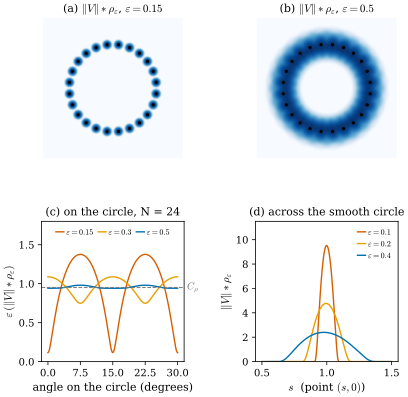
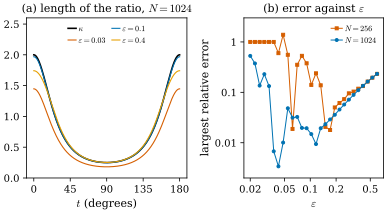
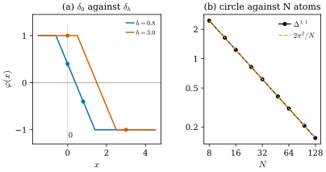

46.7 Regularization and Distances Between Varifolds
Goals
- kernel \(\rho_\varepsilon\)로 measure를 convolution하는 것을 정의하고, mass 보존, weak-* 수렴, \(d\)차원 집합에서 \(\varepsilon^{d-n}\)으로 커지는 높이와 상수 \(C_\rho\)를 설명할 수 있다.
- point cloud처럼 first variation이 measure가 아닌 varifold에서도 \(\delta V*\rho_\varepsilon\)이 연속 vector field라는 것을 보이고, 그것과 \(\norm{V}*\rho_\varepsilon\)의 비로 curvature를 읽을 때 \(\varepsilon\)이 너무 작거나 크면 어떻게 되는지 설명할 수 있다.
- bounded Lipschitz distance \(\Delta^{1,1}\)을 정의하고 Dirac mass, mass 차이, 기울어진 plane에서 계산할 수 있다.
- cell마다 위치 오차, plane 오차, mass 오차를 더하는 bound를 증명하고, circle과 point cloud, staircase에 적용할 수 있다.
Prerequisites
- Section 46.2: measure, weak-* convergence(Definition 46.2.6), density(Theorem 46.2.13). Section 46.3: \(\Omega \times G_{d,n}\)의 거리 \(\abs{x - y} + \norm{P - Q}\). Section 46.4: point cloud varifold(Definition 46.4.6), staircase의 극한(Example 46.4.10). Section 46.5: first variation, point cloud의 first variation이 measure가 아니라는 것(Exercise 46.5.4).
- Track 2: mollified polyhedron(Definition 40.4.7), weak error(Remark 41.4.2)
Motivation
앞의 두 절은 smooth surface, polygon, junction에서 curvature를 first variation으로 읽었다. 그런데 네 논문의 데이터는 point cloud다. point cloud varifold의 first variation은 \(X\)의 도함수를 점에서 읽으므로 measure가 아니고(Exercise 46.5.4), \(\delta V = -\vec H\norm{V}\)라는 분해를 쓸 수 없다. 해결책은 영상 처리에서 익숙한 것이다. 반지름 \(\varepsilon\)의 kernel로 흐리게(blur) 하면 점들이 smooth function이 되고, 그러면 비를 취할 수 있다. 둘째 문제는 “가깝다”를 숫자로 말하는 것이다. weak-* 수렴(Definition 46.2.6)은 열이 수렴하는지만 말하고, 지금 가진 point cloud가 surface에서 얼마나 떨어져 있는지는 말하지 않는다. Section 46.1의 표에서 본 “가까움의 네 단계” 가운데 varifold의 수렴을 숫자로 재는 거리가 필요하다. 이 절은 이 두 도구, 곧 convolution과 bounded Lipschitz distance를 준비한다. [BLM17]과 [BLM22]의 정리는 모두 이 두 도구로 쓰여 있다.
Smoothing a Measure
먼저 kernel을 정한다. [BLM17, §1]을 따라, profile \(\rho\colon\R \to [0, \infty)\)는 짝함수이고 \([-1, 1]\) 밖에서 \(0\)이며 \(C^1\)이라 하자. \(\R^n\)에서 적분이 \(1\)이 되도록 맞춘 radial kernel을 \(\varepsilon\)배로 줄인 것을 쓴다.
\(\rho_\varepsilon\)는 반지름 \(\varepsilon\)의 ball 밖에서 \(0\)이다. 이 절의 그림은 [BLM17, §8.1.1]의 \(\rho(r) = c\,e^{-1/(1 - r^2)}\)(\(\abs{r} \lt 1\))을 쓰고, \(c\)는 \(\R^2\)에서 적분이 \(1\)이 되게 하는 상수 \(c = 2.1436\)이다.
Definition 46.7.1 (convolution of a measure). \(\R^n\) 위의 Radon measure \(\mu\)와 kernel \(\rho_\varepsilon\)에 대해
로 정한 함수 \(\mu*\rho_\varepsilon\colon\R^n \to [0, \infty)\)를 \(\mu\)와 \(\rho_\varepsilon\)의 convolution(측도의 합성곱)이라 한다. varifold \(V\)에서는 mass의 convolution \(\norm{V}*\rho_\varepsilon\)을 쓴다.
점 \(x\)에서의 값은 반지름 \(\varepsilon\)의 ball 안의 mass를 kernel로 가중해 더한 것이다. point cloud \(\sum_im_i\delta_{x_i}\)이면 \(\sum_im_i\rho_\varepsilon(x - x_i)\), 곧 점마다 작은 bump를 올려 더한 그림이다. \(\mu = f\,\mathcal{L}^n\)이 density를 가지면 보통의 함수 convolution \(f*\rho_\varepsilon\)이다.
Proposition 46.7.2 (what smoothing keeps). \(\mu\)가 \(\R^n\) 위의 Radon measure라 하자.
- (a) \(\mu*\rho_\varepsilon\)은 \(C^1\) 함수이고, \(\mu\)가 유한이면 \(\int(\mu*\rho_\varepsilon)\,dx = \mu(\R^n)\)이다.
- (b) \(\varepsilon \to 0\)이면 measure \((\mu*\rho_\varepsilon)\,\mathcal{L}^n\)이 \(\mu\)로 weak-* 수렴한다.
- (c) \(M\)이 \(C^1\) \(d\)-submanifold이고 \(\theta\)가 \(M\) 위의 연속함수이며 \(\mu = \theta\,\mathcal{H}^d\llcorner M\)이면, 모든 \(x \in M\)에서
이다. \(C_\rho = d\,\omega_d\int_0^1\rho(r)r^{d-1}\,dr\)는 kernel을 \(d\)차원 plane 위에서 적분한 값이다(\(\omega_d\)는 \(d\)차원 unit ball의 부피). [BLM17, (4.1), (4.7)].
Proof. (a) \(\rho_\varepsilon\)이 \(C^1\)이고 support가 compact이므로 적분 기호 안에서 미분할 수 있다. Fubini로 \(\int\int\rho_\varepsilon(x - y)\,dx\,d\mu(y) = \int1\,d\mu\)이다. (b) \(\varphi \in C_c(\R^n)\)이면 Fubini와 \(\rho_\varepsilon\)이 짝함수라는 것에서 \(\int\varphi\,(\mu*\rho_\varepsilon)\,dx = \int(\varphi*\rho_\varepsilon)\,d\mu\)이다. \(\varphi\)는 uniformly continuous이므로 \(\varphi*\rho_\varepsilon \to \varphi\)가 고르게 수렴하고, 모두 한 compact set 밖에서 \(0\)이므로 \(\int(\varphi*\rho_\varepsilon)\,d\mu \to \int\varphi\,d\mu\)이다. (c) \(y = x + \varepsilon z\)로 바꾸면
\[ \begin{aligned} &\varepsilon^{n-d}(\mu*\rho_\varepsilon)(x) \\ &= \int\rho(\abs{z})\,\theta(x + \varepsilon z)\,d\mathcal{H}^d\llcorner M_\varepsilon(z) \end{aligned} \]
이다. 여기서 \(M_\varepsilon = (M - x)/\varepsilon\)은 \(M\)을 \(x\) 중심으로 \(1/\varepsilon\)배 확대한 것이다(\(\mathcal{H}^d\)는 길이를 \(1/\varepsilon\)배 하면 \(\varepsilon^{-d}\)배가 된다). \(M\)이 \(C^1\)이므로 \(z\)가 unit ball에 있는 동안 \(M_\varepsilon\)은 tangent plane \(T_xM\)으로 다가가고, \(\theta(x + \varepsilon z) \to \theta(x)\)이다. 그래서 적분은 \(\theta(x)\int_{T_xM}\rho(\abs{z})\,d\mathcal{H}^d(z) = C_\rho\theta(x)\)로 간다.
(c)는 \(M\)이 rectifiable이어도 \(\mathcal{H}^d\)-a.e. \(x\)에서 성립한다. approximate tangent space의 정의(Definition 46.4.4(b))가 바로 확대한 집합이 plane으로 간다는 것이기 때문이다. (c)에서 두 가지를 읽자. 첫째, 높이가 \(\varepsilon^{d-n}\)으로 커진다. curve(\(d = 1\))를 \(\R^2\)(\(n = 2\))에서 흐리면 폭 \(2\varepsilon\)에 mass를 모아 놓으므로 높이가 \(1/\varepsilon\)배다. 둘째, \(\varepsilon\)을 곱해도 극한은 \(\theta\)가 아니라 \(C_\rho\theta\)다. kernel을 \(\R^n\)에서 정규화했는데 mass는 \(d\)차원에 있기 때문이다. 위의 kernel이면 \(n = 2\), \(d = 1\)에서 \(C_\rho = 0.9517\)이다. 같은 kernel로 나눈 비에서는 \(C_\rho\)가 약분되지만, 분자와 분모에 다른 kernel을 쓰면 상수의 비가 남는다(Looking ahead 상자).
Example 46.7.3 (smoothing a circle and a point cloud). (a) unit circle \(C\)의 \(\mu = \mathcal{H}^1\llcorner C\)에서 \((\mu*\rho_\varepsilon)(1, 0)\)은 \(\varepsilon = 0.1, 0.2, 0.4\)일 때 \(9.519\), \(4.762\), \(2.387\)이고, \(\varepsilon\)을 곱하면 \(0.9519\), \(0.9525\), \(0.9548\)로 \(C_\rho = 0.9517\)에 가깝다. \(\varepsilon\)이 클수록 circle이 휘어 있는 효과로 조금 커진다. circle에서 \(\varepsilon\) 이상 떨어진 점에서는 \(0\)이다. (b) circle 위에 같은 간격으로 놓은 \(N = 24\)개의 점(간격 \(0.262\), mass \(2\pi/24\))에서는 \(\varepsilon = 0.15\)이면 \(\varepsilon(\norm{V}*\rho_\varepsilon)\)이 점 위에서 \(1.376\), 두 점 사이에서 \(0.115\)로 크게 출렁인다. \(\varepsilon = 0.3\)이면 \(0.749\)와 \(1.088\), \(\varepsilon = 0.5\)이면 \([0.941, 0.981]\) 안에 있다. kernel이 이웃한 점 몇 개를 덮어야 point cloud가 curve처럼 보인다.
Verification: verify/v-46-7-regularization-distances.py
Figure 46.7.1이 이 예다. (a)와 (b)는 같은 점 24개를 \(\varepsilon = 0.15\)와 \(0.5\)로 흐린 것이다. (a)에서는 점마다 따로 bump가 서서 구슬 목걸이처럼 보이고, (b)에서는 하나의 고리가 된다. (c)는 circle 위를 따라 \(\varepsilon(\norm{V}*\rho_\varepsilon)\)를 읽은 것으로, 주홍(\(\varepsilon = 0.15\))은 점 위(\(7.5^\circ\), \(22.5^\circ\))에서 솟고 사이에서 거의 \(0\)으로 떨어지며, 파랑(\(\varepsilon = 0.5\))은 회색 점선 \(C_\rho\) 근처에서 평평하다. (d)는 smooth circle을 가로질러 \((s, 0)\)에서 읽은 것이다. 폭 \(2\varepsilon\)의 bump가 \(\varepsilon\)이 작아질수록 좁고 높아지지만, 곡선 아래의 넓이는 모두 거의 \(1\)이다(직선이면 정확히 \(1\)이다).

Smoothing the First Variation
first variation은 measure가 아닐 수 있지만, test vector field를 먼저 흐린 뒤에 넣을 수는 있다. \(X\)를 \(X*\rho_\varepsilon\)(성분마다 convolution)으로 바꾸면 도함수도 흐려지므로, point cloud에서도 큰 값이 튀지 않는다.
Proposition 46.7.4 (the smoothed first variation is a vector field). \(V\)가 유한한 mass를 갖는 \(d\)-varifold이면, 모든 \(C^1_c\) vector field \(X\)에 대해 \(\delta V(X*\rho_\varepsilon) = \int\inner{X(x)}{(\delta V*\rho_\varepsilon)(x)}\,dx\)이다. 여기서
는 연속 vector field다. point cloud varifold \(\sum_im_i\delta_{x_i} \otimes \delta_{P_i}\)이면 \((\delta V*\rho_\varepsilon)(x) = \sum_im_iP_i\nabla\rho_\varepsilon(x_i - x)\)이고, \(\abs{x_i - x} \lt \varepsilon\)인 이웃만 기여한다. \(V\)가 bounded first variation \(\delta V = -\vec H\norm{V} + \delta V_s\)를 가지면 \(\delta V*\rho_\varepsilon = -(\vec H\norm{V})*\rho_\varepsilon + \delta V_s*\rho_\varepsilon\)(vector measure의 성분마다 convolution)이다. [BLM17, Def. 3.1, Prop. 3.2].
Proof. \((X*\rho_\varepsilon)(y) = \int X(x)\rho_\varepsilon(y - x)\,dx\)이므로 \(D(X*\rho_\varepsilon)(y) = \int X(x)\nabla\rho_\varepsilon(y - x)^{\mathsf T}\,dx\)이고, \(\divg_S(X*\rho_\varepsilon)(y) = \tr\big(S\,D(X*\rho_\varepsilon)(y)\big)\) \(= \int\inner{X(x)}{S\nabla\rho_\varepsilon(y - x)}\,dx\)이다. 이것을 \(dV(y, S)\)로 적분하고 Fubini로 순서를 바꾸면 된다. \(\nabla\rho_\varepsilon\)이 bounded continuous이고 \(\norm{V}\)가 유한이므로 \(x\)에 대해 연속이다. bounded first variation이면 \(\delta V(X*\rho_\varepsilon)\) \(= -\int\inner{\vec H}{X*\rho_\varepsilon}\,d\norm{V}\) \(+ \delta V_s(X*\rho_\varepsilon)\)이고, 각 항에 (b)의 증명과 같은 Fubini를 쓴다.
(46.7.4)를 말로 하면 이렇다. 이웃한 점 \(y\)마다 kernel의 기울기 \(\nabla\rho_\varepsilon(y - x)\)를 그 점의 plane \(S\)에 정사영해서 더한다. 감소하는 profile이면 \(\nabla\rho_\varepsilon(y - x)\)는 \(y\)에서 \(x\) 쪽을 향한다. plane에 정사영하면 curve를 따라 양쪽에서 온 성분이 서로 상쇄되고, curve가 휜 만큼만 바깥쪽 성분이 남는다. 그래서 \(-\delta V*\rho_\varepsilon\)은 안쪽, 곧 \(\vec H\) 쪽을 향한다.
이제 비를 취할 수 있다. smooth closed curve에서는 \(\delta V_s = 0\)이므로 \(-(\delta V*\rho_\varepsilon)/(\norm{V}*\rho_\varepsilon)\)은 \(\vec H\)를 kernel로 가중평균한 것이고, \(\varepsilon \to 0\)이면 \(\vec H(x)\)로 간다. Theorem 46.2.13의 “작은 ball에서 두 measure의 비”를 kernel로 부드럽게 한 것이다. 같은 식을 point cloud에 그대로 쓸 수 있다는 것이 요점이다.
Example 46.7.5 (curvature of an ellipse from a point cloud). ellipse \((2\cos t, \sin t)\)(둘레 \(L = 9.6884\)) 위에 arc length 간격 \(h = L/N\)으로 \(N\)개의 점을 놓고, 정확한 tangent line \(P_i\)와 mass \(m_i = L/N\)을 준다. 각 점에서 \(-(\delta V*\rho_\varepsilon)/(\norm{V}*\rho_\varepsilon)\)를 계산하면 모든 점에서 안쪽을 향하고, 그 길이를 curvature \(\kappa\)와 비교하면 다음과 같다.
- smooth ellipse 자체(\(N \to \infty\))에서 vertex \(t = 0\)(\(\kappa = 2\))의 값은 \(\varepsilon = 0.05, 0.1, 0.3\)일 때 \(1.995\), \(1.980\), \(1.840\)이다. \(\varepsilon\)이 크면 curvature가 작은 이웃까지 평균하므로 vertex에서 작아진다.
- \(N = 1024\)(\(h = 0.0095\))이면 모든 점에서의 상대 오차의 최댓값이 \(\varepsilon = 0.1\)에서 \(1.5\%\)이다. \(\varepsilon = 0.03\)(\(\varepsilon/h \approx 3\))이면 vertex에서 \(1.448\)로 \(28\%\) 작고, \(\varepsilon = 0.4\)이면 vertex에서 \(1.742\)로 \(13\%\) 작다.
- \(N = 256\)(\(h = 0.038\))에서 \(\varepsilon \lt h\)이면 ball 안에 이웃이 없어 분자가 \(0\)이다. 오차가 \(100\%\)다.
Verification: verify/v-46-7-regularization-distances.py
Figure 46.7.2(a)는 \(N = 1024\)에서 \(t \in [0^\circ, 180^\circ]\)를 따라 비의 길이를 그린 것이다. 파랑(\(\varepsilon = 0.1\))은 검은 \(\kappa\)와 거의 겹친다. 주홍(\(\varepsilon = 0.03\))은 모든 곳에서 아래에 있다. 이웃이 세 개쯤이면 kernel의 적분을 점의 합으로 근사한 오차가 크기 때문이다. 주황(\(\varepsilon = 0.4\))은 평평한 곳에서는 맞지만 vertex에서 낮다. (b)는 \(\varepsilon\)을 바꾸며 가장 큰 상대 오차를 log-log로 그린 것이다. 두 곡선 모두 오른쪽에서는 같은 직선을 따라 올라가고(흐림의 오차, 점의 수에 무관하다), 왼쪽에서는 들쭉날쭉하게 커진다(이웃이 부족한 오차). 점이 많은 \(N = 1024\)(파랑)의 골짜기가 더 왼쪽, 더 아래에 있다. 결국 \(\varepsilon\)은 “점 간격의 몇 배”보다 크고 “curvature 반지름”보다 충분히 작아야 한다. [BLM17]의 수렴 정리는 이 두 조건을 정량적으로 쓴 것이다.

The Bounded Lipschitz Distance
두 measure가 가까운지 재려면 test function으로 적분한 값의 차이를 보면 된다. 그러나 모든 continuous function을 허용하면 \(\delta_0\)과 \(\delta_h\)는 아무리 가까워도 차이가 크다(\(\varphi\)를 \(0\)에서 \(1\), \(h\)에서 \(0\)으로 잡으면 된다). 그래서 test function의 기울기를 제한한다. 크기도 제한하는 이유는 mass가 다른 두 measure를 비교하기 위해서다.
Definition 46.7.6 (bounded Lipschitz distance). locally compact metric space \((X, d)\) 위의 유한한 Radon measure \(\mu\), \(\nu\)에 대해
를 \(\mu\)와 \(\nu\)의 bounded Lipschitz distance(유계 립시츠 거리)라 한다. sup은 \(\mathrm{lip}(\varphi) \le 1\)이고 \(\norm{\varphi}_\infty \le 1\)인 함수 \(\varphi\colon X \to \R\) 전체에 대해 잡는다. 두 varifold \(V\), \(W\)에서는 \(X = \Omega \times G_{d,n}\)에 거리 \(\abs{x - y} + \norm{P - Q}\)(Section 46.3)를 주고 \(\Delta^{1,1}(V, W)\)를 쓴다. [BLM17, Def. 2.6, Def. 2.7], [BLM22, Def. 2.7]. ([BLM17]은 \(\Omega \times G_{d,n}\)의 거리를 따로 적지 않지만, Lemma 6.1의 증명에서 \(\abs{\varphi(x, P) - \varphi(y, T)} \le \abs{x - y} + \norm{P - T}\)로 쓴다.)
flat distance라고도 한다. mass가 같은 두 probability measure의 1-Wasserstein distance \(W_1\)은 Kantorovich–Rubinstein duality로 \(\norm{\varphi}_\infty \le 1\) 조건 없이 \(\mathrm{lip}(\varphi) \le 1\)인 \(\varphi\)에 대한 같은 sup이다. mass가 다르면 \(\varphi\)에 상수를 더해 sup을 무한대로 만들 수 있으므로 \(W_1 = \infty\)이고, \(\Delta^{1,1}\)은 크기 조건으로 그것을 막는다 [BLM17, §2]. 국소판 \(\Delta^{1,1}_U\)는 \(\varphi\)의 support를 open set \(U\)(varifold에서는 \(U \times G_{d,n}\)) 안으로 제한한 것이고, [BLM17]의 수렴 정리는 대부분 작은 ball \(U\)에서의 \(\Delta^{1,1}_U\)로 쓰여 있다.
Proposition 46.7.7 (the distance measures weak-* convergence). locally compact metric space 위의 Radon measure \(\mu\), \(\mu_k\)가 \(\mu(X) + \sup_k\mu_k(X) \lt \infty\)를 만족하고 모두 한 compact set \(K\)에 support가 있으면, \(\mu_k \overset{*}{\rightharpoonup} \mu\)인 것과 \(\Delta^{1,1}(\mu_k, \mu) \to 0\)인 것은 동치다. [BLM17, Prop. 2.8]([Villani09], [Bogachev07]).
증명은 생략한다. 한 방향만 직관을 적으면, \(K\) 위에서 \(\mathrm{lip} \le 1\), \(\abs{\varphi} \le 1\)인 함수들의 집합은 Arzelà–Ascoli로 compact이므로 유한 개의 함수로 \(\eta\)-근사할 수 있고, 그 유한 개에서의 weak-* 수렴이 sup의 수렴을 준다. 따라서 mass가 bounded이고 한 compact set 안에 있는 한, “\(\Delta^{1,1}\)이 작다”는 것은 weak-* 수렴의 정량판이다. 논문들의 가정 “\(\Delta^{1,1}(V_i, V) \le d_i\)”는 이 뜻이다.
Example 46.7.8 (Dirac masses). (a) \(\R\)에서 \(\Delta^{1,1}(\delta_0, \delta_h) = \min(\abs{h}, 2)\)이다. \(\abs{\varphi(0) - \varphi(h)}\)는 Lipschitz 조건으로 \(\abs{h}\) 이하, 크기 조건으로 \(2\) 이하이고, \(\varphi(x) = \max\big(-1, \min(1, \tfrac h2 - x)\big)\)가 등호를 준다. (b) \(\Delta^{1,1}(a\delta_0, b\delta_0) = \abs{a - b}\)이다(\(\varphi \equiv 1\)). 반면 \(W_1(a\delta_0, b\delta_0) = \infty\)(\(a \ne b\))다. (c) 같은 점에 놓였지만 plane이 다른 varifold의 원자 \(\delta_{(0, P)}\)와 \(\delta_{(0, Q)}\)는 \(\Delta^{1,1} = \norm{P - Q}\)이고(두 projection의 차이의 operator norm은 \(1\) 이하다), \(\R^2\)의 두 직선이 각 \(\theta\)를 이루면 \(\abs{\sin\theta}\)다. 위 bound는 Lipschitz 조건이고, \(\varphi(x, S) = \norm{S - Q}\)가 등호를 준다. 위치와 plane의 차이가 같은 단위로 더해진다.
Verification: verify/v-46-7-regularization-distances.py
A Bound from Cells
실제로 \(\Delta^{1,1}\)을 계산하는 일은 드물다. 대신 bound를 쓴다. surface를 조각(cell)으로 나누고 조각마다 원자 하나를 두면, 오차는 조각 안에서 위치와 plane이 얼마나 벗어나는지와 mass를 얼마나 틀리게 주었는지로 정해진다.
Proposition 46.7.9 (cell quadrature bound). \(M\)이 \(\mathcal{H}^d(M) \lt \infty\)인 rectifiable set이고 \(V = v(M, 1)\)이라 하자. \(M\)을 Borel 조각 \(C_1, \dots, C_N\)으로 나누고, 점 \(x_i\), plane \(P_i\), mass \(m_i \ge 0\)으로 \(W = \sum_im_i\delta_{x_i} \otimes \delta_{P_i}\)를 만들면
이다. 특히 모든 \(i\)와 \(x \in C_i\)에서 \(\abs{x - x_i} \le h\), \(\norm{T_xM - P_i} \le \varepsilon_T\)이면 \(\Delta^{1,1}(V, W) \le \mathcal{H}^d(M)(h + \varepsilon_T)\) \(+ \sum_i\abs{m_i - \mathcal{H}^d(C_i)}\)이다.
Proof. \(\mathrm{lip}(\varphi) \le 1\), \(\norm{\varphi}_\infty \le 1\)이면
\[ \begin{aligned} &\int\varphi\,dV - \int\varphi\,dW \\ &= \sum_i\int_{C_i}\big(\varphi(x, T_xM) - \varphi(x_i, P_i)\big)\,d\mathcal{H}^d \\ &\quad + \sum_i\big(\mathcal{H}^d(C_i) - m_i\big)\varphi(x_i, P_i) \end{aligned} \]
이다. 첫 합의 integrand는 Lipschitz 조건으로 \(\abs{x - x_i} + \norm{T_xM - P_i}\) 이하이고, 둘째 합의 각 항은 \(\abs{\varphi} \le 1\)로 \(\abs{m_i - \mathcal{H}^d(C_i)}\) 이하다. sup을 취하면 된다.
세 항이 각각 “Gaussian이나 sample 점이 surface 조각의 대표로서 얼마나 좋은가”의 세 측면이다. 조각의 크기(위치 오차), 조각 안에서 normal이 도는 정도(plane 오차), 조각의 넓이를 mass로 맞췄는지(mass 오차). [BLM17, Lemma 6.1]은 \(m_i = \mathcal{H}^d(C_i)\)로 두고 첫 항으로 근사 정리를 증명하고, [ManifoldGS26, (6)–(7)]의 forward consistency bound \(A(M)(h + \varepsilon_T) + \varepsilon_q\)가 둘째 형태다((46.7.6)에서 \(\varepsilon_q = \sum\abs{q_i - A(C_i)}\)). ManifoldGS26은 plane의 차이를 Frobenius norm으로 재는데, \(\norm{\cdot} \le \norm{\cdot}_F\)이므로 그 bound는 이 장의 거리로도 성립한다. 같은 논법으로, 같은 cell 데이터에서 만든 volumetric varifold와 point cloud varifold의 거리가 cell 지름 \(\delta\) 곱하기 mass 이하라는 [BLM17, Prop. 2.13](Section 46.4)도 나온다. 두 varifold는 cell마다 같은 mass와 같은 plane을 쓰고 위치만 cell 안에서 다르기 때문이다.
Example 46.7.10 (a circle against \(N\) atoms, exactly). unit circle \(C\)를 길이 \(2\pi/N\)인 호 \(N\)개로 나누고, 호의 가운데 점 \(x_i\), 그 점의 tangent \(P_i\), mass \(m_i = 2\pi/N\)으로 \(W_N\)을 만들자. 호의 가운데에서 각 \(s\)만큼 떨어진 점은 \(\abs{x - x_i} = 2\sin(\abs{s}/2)\), \(\norm{T_x - P_i} = \abs{\sin s}\)이므로 (46.7.6)은
\[ \begin{aligned} \Delta^{1,1}(v(C, 1), W_N) &\le N\Big[8\Big(1 - \cos\frac{\pi}{2N}\Big) \\ &\qquad + 2\Big(1 - \cos\frac{\pi}{N}\Big)\Big] \end{aligned} \]
이고, 오른쪽은 \(N\)이 크면 \(2\pi^2/N\)에 가깝다. \(N \ge 7\)이면 이것이 등호다. test function \(\varphi(x, S)\) \(= \min\big(1, \min_i(\abs{x - x_i} + \norm{S - P_i})\big)\)는 \(\mathrm{lip} \le 1\), \(0 \le \varphi \le 1\)이고 원자에서 \(0\)이므로 \(\int\varphi\,dW_N = 0\)이며, circle 위에서는 가장 가까운 원자가 최솟값을 주고 그 값이 \(1\)보다 작으므로(\(N \ge 7\)) \(\int\varphi\,dv(C, 1)\)이 정확히 위의 합이다. \(N = 8, 16, 32, 64\)이면 \(2.4477\), \(1.2312\), \(0.6165\), \(0.3084\)이다.
Verification: verify/v-46-7-regularization-distances.py
Figure 46.7.3(a)는 Example 46.7.8(a)의 최적 test function이다. \(h = 0.8\)(파랑)이면 기울기 \(-1\)인 부분이 두 점을 모두 지나 차이가 \(0.8\)이고, \(h = 3\)(주홍)이면 \(\pm1\)에서 잘려 차이가 \(2\)에 머문다. (b)는 Example 46.7.10의 값을 log-log로 그린 것으로, 검은 점이 주황 점선 \(2\pi^2/N\) 위에 놓인다. 점을 두 배로 늘리면 거리가 반이 된다. 거리를 정확히 주는 test function은 원자에서 \(0\)이고 원자 사이에서 꺾이는 함수다. smooth test function 하나로 재면 오차가 훨씬 작게 보인다. 실제로 verify에서 무작위로 고른 affine test function들의 차이는 \(N = 8\)에서도 \(0.05\)를 넘지 않는다. \(\Delta^{1,1}\)은 그런 운 좋은 test function이 아니라 가장 나쁜 test function을 본다.

Example 46.7.11 (the staircase in numbers). Example 46.1.2의 staircase \(S_n\)(계단 \(n\)개, 대각선 \(D\) 위)과 그 varifold 극한 \(V_\infty = \sqrt2\,\mathcal{H}^1\llcorner D \otimes \tfrac12(\delta_{P_h} + \delta_{P_v})\)(Example 46.4.10)에 대해
\[ \frac{1}{\sqrt2\,n} \le \Delta^{1,1}\big(v(S_n, 1), V_\infty\big) \le \frac1n \]
이다. 반면 대각선 자체의 varifold와는 \(\Delta^{1,1}(v(S_n, 1), v(D, 1)) \ge \sqrt2\)로 \(n\)에 관계없이 떨어져 있다. 위의 bound: 가로 조각 \([\tfrac kn, \tfrac{k+1}n] \times \{\tfrac kn\}\)의 점 \((x, \tfrac kn)\)을 대각선의 점 \((x, x)\)로 보내면, 가로 조각의 mass \(\tfrac1n\)이 \(V_\infty\) 가운데 \(P_h\)를 가진 부분의 그 구간 위 mass(\(\tfrac12\cdot\sqrt2\cdot\tfrac{\sqrt2}{n} = \tfrac1n\))과 같고 plane도 같다. 움직인 거리는 \(x - \tfrac kn \le \tfrac1n\)이고, 세로 조각도 같으므로 차이는 \(\int\abs{x - \tfrac kn}\)들의 합 \(2n\cdot\tfrac{1}{2n^2} = \tfrac1n\) 이하다. 아래 bound는 대각선까지의 거리 \(\varphi(x, S) = \min(1, \operatorname{dist}(x, D))\)로, \(\int\varphi\,dv(S_n, 1) = \tfrac{1}{\sqrt2\,n}\)이고 \(\int\varphi\,dV_\infty = 0\)이다. 대각선과의 비교에서는 \(\varphi(x, S) = \norm{S - P_D}\)(\(P_D\)는 대각선의 projection)가 staircase에서 어디서나 \(\sin45^\circ\)이므로 \(\int\varphi\,dv(S_n, 1) = 2\cdot\tfrac{\sqrt2}{2} = \sqrt2\)이고 \(v(D, 1)\)에서는 \(0\)이다.
Verification: verify/v-46-7-regularization-distances.py
이 예가 Section 46.1의 표를 숫자로 바꾼 것이다. staircase는 Hausdorff distance로는 대각선에 \(\tfrac{1}{\sqrt2 n}\)만큼 다가가지만, varifold로는 대각선에서 \(\sqrt2\) 이상 떨어져 있고 대신 tangent가 섞인 \(V_\infty\)에 \(\tfrac1n\)의 속도로 다가간다.
Summary
- kernel \(\rho_\varepsilon\)로 흐린 \(\mu*\rho_\varepsilon\)은 smooth function이고, mass를 보존하며, \(\varepsilon \to 0\)에서 \(\mu\)로 weak-* 수렴한다. \(d\)차원 대상에서는 높이가 \(\varepsilon^{d-n}\)으로 커지고 \(\varepsilon^{n-d}\mu*\rho_\varepsilon \to C_\rho\theta\)이다(Definition 46.7.1, Proposition 46.7.2).
- first variation은 measure가 아니어도 \(\delta V*\rho_\varepsilon(x) = \int S\nabla\rho_\varepsilon(y - x)\,dV\)로 흐릴 수 있고, point cloud에서는 반지름 \(\varepsilon\) 안의 이웃에 대한 합이다(Proposition 46.7.4). \(-\delta V*\rho_\varepsilon\)과 \(\norm{V}*\rho_\varepsilon\)의 비가 curvature vector를 근사하고, \(\varepsilon\)은 점 간격보다 충분히 크고 curvature 반지름보다 충분히 작아야 한다(Example 46.7.5).
- bounded Lipschitz distance \(\Delta^{1,1}\)은 \(\mathrm{lip} \le 1\), \(\abs{\varphi} \le 1\)인 test function에 대한 차이의 sup이고, mass가 bounded인 compact 상황에서 weak-* 수렴을 잰다. 위치 \(h\)의 차이는 \(\min(h, 2)\), mass 차이는 그대로, plane의 차이는 \(\norm{P - Q}\)로 센다(Definition 46.7.6–Example 46.7.8).
- cell마다 위치 오차, plane 오차, mass 오차를 더한 것이 \(\Delta^{1,1}\)의 bound다((46.7.6)). circle과 원자 \(N\)개는 정확히 \(\approx 2\pi^2/N\)이고, staircase는 \(V_\infty\)와 \(\le 1/n\), 대각선과 \(\ge\sqrt2\)이다(Example 46.7.10, Example 46.7.11).
다음 절에서는 3DGS의 Gaussian 하나를 varifold의 원자로 읽는다. covariance에서 plane을 어떻게 얻는지, opacity와 넓이(mass)가 왜 다른지, split과 clone이 mass를 어떻게 바꾸는지를 본다.
Quick check
Exercise 46.7.1 ★ \(\R\)에서 \(\Delta^{1,1}(\delta_0, \tfrac12\delta_0 + \tfrac12\delta_h)\)를 구하여라(\(h \gt 0\)).
Solution
차이는 \(\tfrac12(\varphi(0) - \varphi(h))\)이고, Example 46.7.8(a)에서 \(\varphi(0) - \varphi(h)\)의 최댓값은 \(\min(h, 2)\)이므로 거리는 \(\tfrac12\min(h, 2)\)이다. mass의 절반만 움직였기 때문이다.
Verification: verify/v-46-7-regularization-distances.py
Exercise 46.7.2 ★ \(\R^3\)의 같은 점에 놓인 두 원자 \(\delta_{(0, P)}\), \(\delta_{(0, Q)}\)의 plane이 normal \(\mathbf{n}\), \(\mathbf{m}\)을 가진 평면이고 \(\mathbf{n}\)과 \(\mathbf{m}\) 사이의 각이 \(10^\circ\)이다. 이 장의 거리(operator norm)와 Frobenius norm을 쓴 거리에서 \(\Delta^{1,1}\)을 각각 구하여라.
Solution
Example 46.7.8(c)에서 \(\Delta^{1,1} = \norm{P - Q}\)이다. hyperplane이면 \(\norm{P - Q} = \norm{\mathbf{n}\mathbf{n}^{\mathsf T} - \mathbf{m}\mathbf{m}^{\mathsf T}}\) \(= \sin10^\circ = 0.1736\)이고(Proposition 46.3.4), Frobenius norm이면 \(\sqrt2\sin10^\circ = 0.2456\)이다. 같은 test function 논법이 Frobenius 거리에서도 그대로 성립한다.
Verification: verify/v-46-7-regularization-distances.py
Exercise 46.7.3 ★ Example 46.7.10에서 mass를 arc length \(2\pi/N\) 대신 현의 길이 \(2\sin(\pi/N)\)로 주면 (46.7.6)의 bound는 얼마나 커지는가? \(N = 16\)에서 계산하고, \(N\)이 클 때의 크기를 말하여라.
Solution
mass 오차 항 \(\sum_i\abs{m_i - \mathcal{H}^1(C_i)} = N\big(\tfrac{2\pi}{N} - 2\sin\tfrac{\pi}{N}\big)\)이 더해진다. \(N = 16\)이면 \(2\pi - 32\sin(\pi/16) = 0.0403\)이다. \(\sin u = u - u^3/6 + \cdots\)에서 이 값은 \(\approx\pi^3/(3N^2)\)이므로 \(N^{-2}\)으로 줄고, 위치와 plane 오차의 \(2\pi^2/N\)보다 훨씬 빨리 작아진다. \(N = 16\)에서 bound는 \(1.2312 + 0.0403 = 1.2715\)다.
Verification: verify/v-46-7-regularization-distances.py
Exercise 46.7.4 ★★ Example 46.7.11의 아래 bound에서 \(\int\min(1, \operatorname{dist}(x, D))\,d\mathcal{H}^1\llcorner S_n = \tfrac{1}{\sqrt2\,n}\)임을 확인하고, mass만 보는 거리 \(\Delta^{1,1}(\norm{v(S_n, 1)}, \sqrt2\,\mathcal{H}^1\llcorner D)\)는 \(n \to \infty\)에서 \(0\)으로 가는지 답하여라.
Solution
가로 조각 위의 점 \((\tfrac kn + u, \tfrac kn)\)(\(0 \le u \le \tfrac1n\))은 대각선까지 거리가 \(u/\sqrt2\)이다. 세로 조각도 같으므로 적분은 \(2n\int_0^{1/n}\tfrac{u}{\sqrt2}\,du = \tfrac{2n}{\sqrt2}\cdot\tfrac{1}{2n^2} = \tfrac{1}{\sqrt2\,n}\)이다. mass끼리의 거리는 위의 bound 논법에서 plane을 잊은 것이므로 역시 \(\le\tfrac1n\)이고 \(0\)으로 간다. 이것이 Example 46.2.8의 measure 수렴이다. 차이는 plane에만 있다.
Verification: verify/v-46-7-regularization-distances.py
Exercise 46.7.5 ★★ \(\R^2\)의 직선 \(L = \{x_2 = 0\}\)의 \(\mu = \mathcal{H}^1\llcorner L\)에 대해 \((\mu*\rho_\varepsilon)(0, s)\)가 \(\tfrac1\varepsilon g(s/\varepsilon)\) 꼴임을 보이고, \(g(0) = C_\rho\), \(\abs{s} \ge \varepsilon\)이면 \(0\)임을 확인하여라. 같은 직선 위에 간격 \(h\)로 mass \(h\)인 점을 놓은 point cloud에서는 \(\varepsilon \lt h/2\)일 때 무슨 일이 생기는가?
Solution
\((\mu*\rho_\varepsilon)(0, s) = \int_{\R}\varepsilon^{-2}\rho\big(\sqrt{t^2 + s^2}/\varepsilon\big)\,dt\)이고 \(t = \varepsilon u\)로 바꾸면 \(\tfrac1\varepsilon\int\rho\big(\sqrt{u^2 + (s/\varepsilon)^2}\big)\,du = \tfrac1\varepsilon g(s/\varepsilon)\)이다. \(g(0) = \int_{\R}\rho(\abs{u})\,du = C_\rho\)(\(d = 1\))이고, \(\abs{s} \ge \varepsilon\)이면 \(\rho\)의 인자가 \(1\) 이상이라 \(0\)이다. point cloud에서 \(\varepsilon \lt h/2\)이면 서로 이웃한 점의 ball이 겹치지 않으므로 \(\norm{V}*\rho_\varepsilon\)은 점마다 떨어진 bump이고, 점 사이의 직선 위에서 \(0\)이다. 각 점에서 \(\delta V*\rho_\varepsilon\)는 자기 자신(\(\nabla\rho_\varepsilon(0) = 0\))밖에 보지 않으므로 \(0\)이다. Example 46.7.5의 오차 \(100\%\)가 이것이다.
Verification: verify/v-46-7-regularization-distances.py